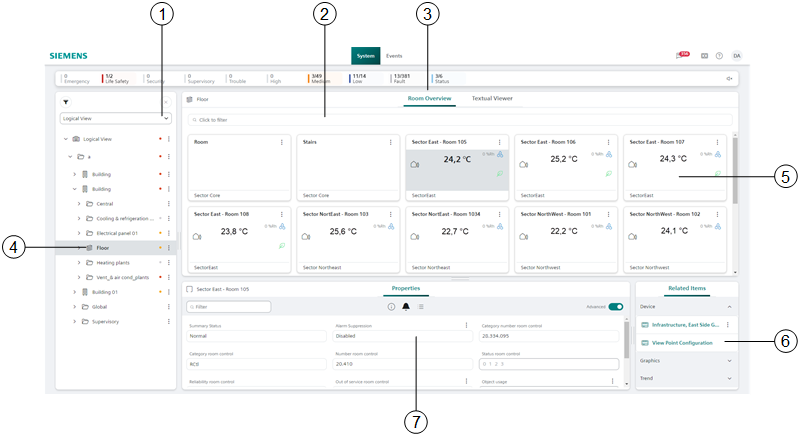
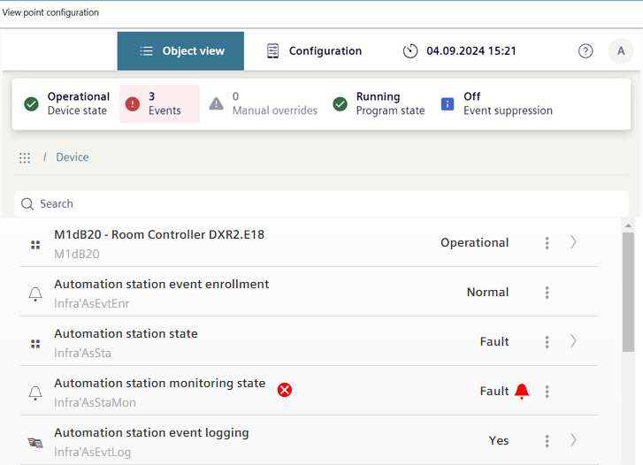

Room Overview for Building/Floor

Room overview building | |
1 | Open the room overview in the logical or user view. |
2 | Predefined filters can refine the room overview. |
3 | Select the Room Overview tab. All rooms are displayed in a room overview. |
4 | Select the floor to open in room overview. The room overview is only displayed with subtype Campus, Building, or Floor. The subtype is set during engineering. |
5 | Displays detailed information on the room state in a tile. |
6 | Depending on the Desigo Automation hardware, the link opens the Web interface.  |
7 | Displays the properties for the specific room. The properties can be edited with the appropriate user rights. |